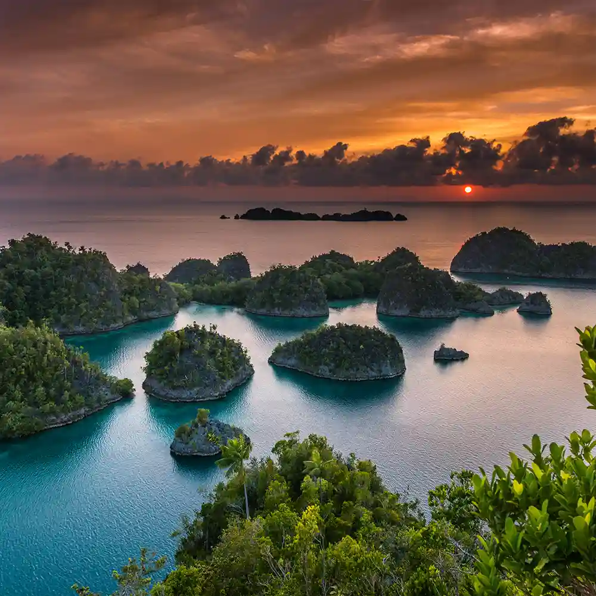
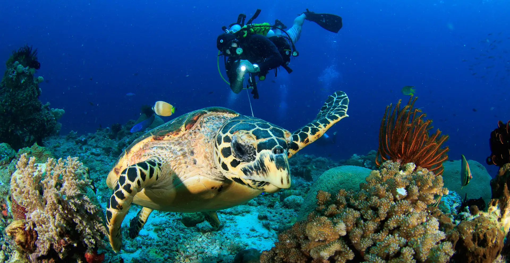
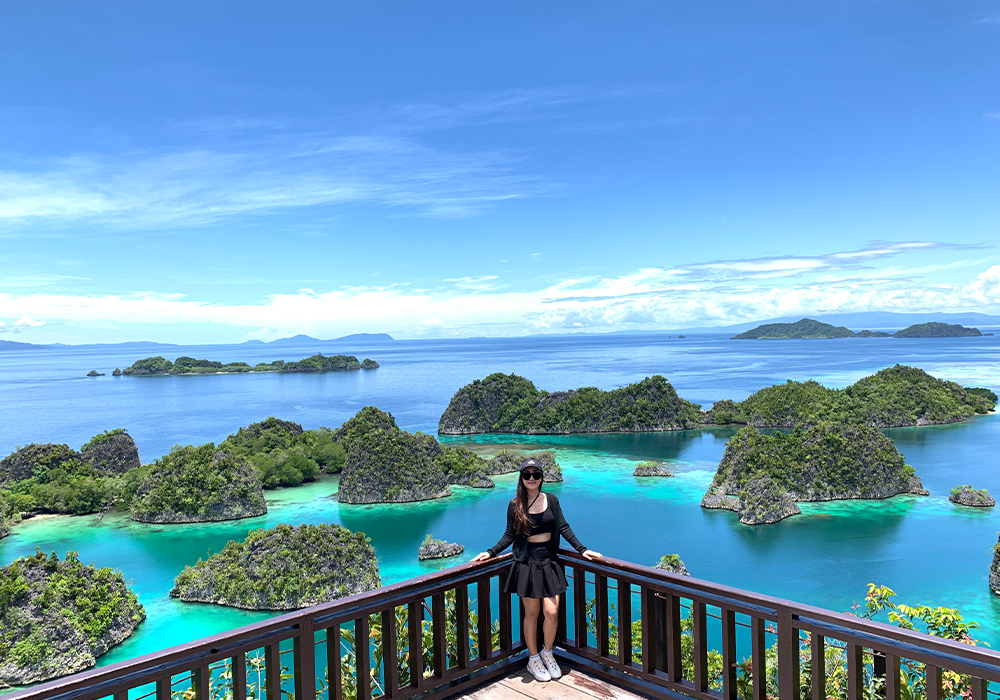
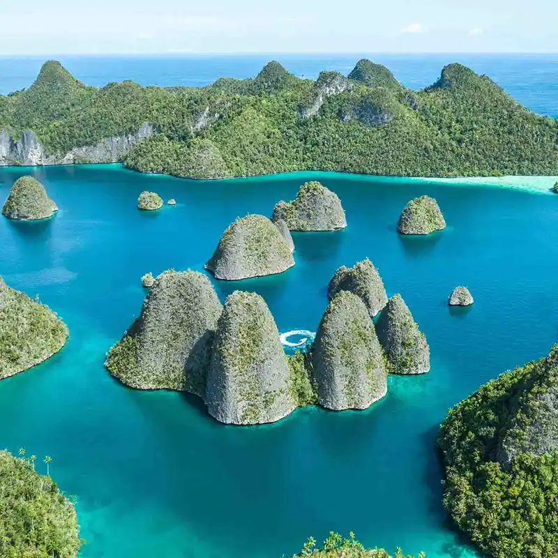
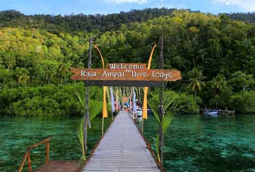

Berdiri sejak 2018, Raja Ampat Tours lahir dari kecintaan mendalam terhadap kekayaan bahari Nusantara. Kami bukan sekadar agen perjalanan; kami adalah warga lokal yang ingin membagikan potongan surga ini kepada dunia.
Misi utama kami adalah menghadirkan pengalaman pariwisata yang tak terlupakan sambil memastikan kelestarian terumbu karang dan memberdayakan ekonomi masyarakat asli Papua.




Sangat aman! Kami menyediakan life jacket berkualitas tinggi dan instruktur/guide kami akan selalu mendampingi peserta yang belum mahir berenang selama berada di air.
Waktu terbaik adalah antara bulan Oktober hingga April, karena pada bulan-bulan tersebut kondisi ombak cenderung tenang dan jarak pandang di dalam air sangat jernih untuk diving atau snorkeling.
Di Waisai (ibu kota) sinyal 4G cukup stabil. Namun saat kita island hopping ke pulau-pulau kecil seperti Wayag atau Piaynemo, sinyal sangat terbatas. Ini adalah waktu yang tepat untuk digital detox!